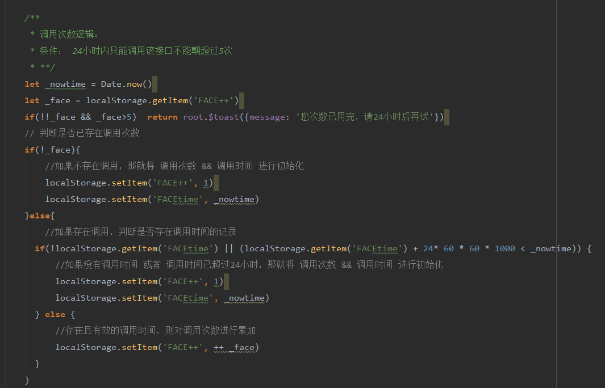

2018从年初到年末
这一年，我经历了换工作，换房子，换同事。职业没变，方向没变，体重没变。做了些尝试，比如：第一次去游泳，去看话剧，去旅行。 这一年的时光，仿佛比以往的要快很多，也有可能是因为自己的年龄，总之，这一年回过头来看，自己年初的计划至今没有完成。 曾跟自己约定要读几本书，要学些什么，而如今年末将至，我依旧是那个我，没有多读那几本书，也没有学那些我想学的东西。
这是我现

这一年，我经历了换工作，换房子，换同事。职业没变，方向没变，体重没变。做了些尝试，比如：第一次去游泳，去看话剧，去旅行。 这一年的时光，仿佛比以往的要快很多，也有可能是因为自己的年龄，总之，这一年回过头来看，自己年初的计划至今没有完成。 曾跟自己约定要读几本书，要学些什么，而如今年末将至，我依旧是那个我，没有多读那几本书，也没有学那些我想学的东西。